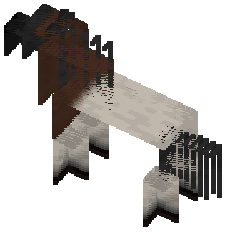
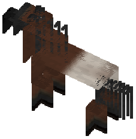

Magical genes / 24 in this family
Fields and regions
Genes that divide the horse into areas - a blanket off the topline, a band round the neck, the underside against the back, a wash with no edge anywhere.
This page is generated. Every word below comes out of the gene's own
file - the same text the game shows - and the picture beside each one is that
gene on a standard bay, baked through the real coat pipeline. Regenerate with
:common:bakeGeneWikiPages after adding or changing a gene; see
GeneWikiTool for why these pages in particular are not hand-written.
Accretion
One long boundary running the length of the horse, dividing it into a pale field and a coloured one - the allele decides whether it is the underside or the topline that goes pale.
Ab · At · n
| Bottom Accretion | The pale field is the underside: a quarter to nearly half the horse, bounded by a single line running nose-to-tail at a third to a half of the local body depth measured up from the belly, rising a little over the shoulder and rather more over the flank. The boundary undulates gently and has no edge at all - it is a gradient a hand's span or two wide. All four legs are included the whole way to the hoof with no separate boundary of their own, and about three horses in five also take a cap on the muzzle. |
|---|---|
| Top Accretion | The mirror image, and the rarer of the two: the pale field is the topline instead - crest, dorsal neck, withers, back, loin, croup and the top of the hip, a fifth to two-fifths of the horse, bounded by a line at half to two-thirds of the body depth measured down from the spine. The legs are excluded entirely. About half of these horses take the mane as well. |
| Wild type | No accretion. |
Collar

A band right round the base of the neck, with everything behind it going pale and the head, crest and lower legs keeping the coat.
Col · Coc · n
| Collar | The band wraps the whole circumference at the base of the neck, its back edge landing at or near the front of the scapula, and it divides the horse: everything behind it goes pale, roughly half the animal, while the head, the front of the neck and the crest keep their colour. The legs come back to the coat from the knee and hock down, over a soft transition rather than a line. The mane keeps its colour; the tail follows the pale field about half the time. |
|---|---|
| Coloured collar | The same split, with the caudal field in a colour rather than pale. Fully recessive: two copies, and a single copy beside the white allele shows white. It never gives blue eyes. |
| Wild type | No collar. |
Cosmic
A blanket anchored on the topline and hanging down the sides, filled with a starfield - and, on a well-marked horse, a planet or two with a ring round it.
Cs · n
| Cosmic | The blanket starts at the dorsal midline and spreads down and out from it, one continuous region with no holes in it and no islands off it. It runs withers to croup and stops above the elbow and stifle - never onto a limb, never onto a hoof. Its lower boundary is lobed and reasonably firm, not a long fade. Inside are stars, thickest near the topline and thinning toward the edge, with a planet or a spiral galaxy on a heavily marked horse. Where the blanket meets the mane or the tail base the colour runs on into the hair, deepening toward the tips. |
|---|---|
| Wild type | No blanket. |
Dutch
A hard-edged white band right round the body at the shoulder, widest under the chest and narrowing over the withers, with white stockings and a white muzzle to match.
Dut · Dtc · n
| Dutch | The rabbit pattern. A band wraps the body at the shoulder and chest, front edge at the base of the neck and back edge at the girth, broadest underneath and pinching as it climbs to the withers - and on a minimal horse it fails to close over the topline at all, leaving a bridge of coat there. White runs forward along the underside of the neck to the throat, takes the muzzle, and often a stripe up the face. All four legs are stocked to somewhere between mid-cannon and the knee, and the front and hind heights rarely match. Every edge is hard - no roaning, no feathering - and every one of them is a smooth curve. The barrel, flank, hindquarters, mane and tail keep the coat entirely. |
|---|---|
| Coloured Dutch | The same band, muzzle and stockings, in a colour the line carries rather than in white. Fully recessive - two copies, and a single copy beside the white allele shows white. It never gives blue eyes. |
| Wild type | No band. |
Emitola
The whole underside taken in black, its upper edge broken into flames, and bright speckling worked all through the flame work - with the forelock the same colour.
Emi · n
| Emitola | Black across the chest, belly and between the legs, extensive and intricate, and reaching up the flanks. Its boundary is not a line but a row of flames - sharp, jagged, energetic - and the flame work is picked out throughout in one bright speckling colour, which also takes the forelock, the hooves and the upper legs. The front and hind coverage do not meet: there is always a break between them along the belly. It goes over white markings rather than under, and the mane is left solid with no striping. |
|---|---|
| Wild type | No emitola. |
Flametouched
Fire on the horse - stylised flames licking up the legs and face with one copy, or a smooth ember gradient over the topline, face, hair and hooves with two. Never both on one horse.
Ffm · n
| Flametouched, gradient | The gradient form: shading over the topline, the face, the hooves and the mane and tail, running smoothly through two or three colours from ember to flame. It is the only form allowed to touch the topline. Up to half the horse. It sets nothing on fire. |
|---|---|
| Flametouched, flames | The flame form: stylised tongues of fire climbing all four legs and a marking across the face, in two or three colours, with the tips brightest. It never touches the topline and never shows over white. It also sets nothing on fire. |
| Wild type | Unlit. |
Goth
A soft-edged hood over the forehead, poll, ears and crest - darker than the coat with one copy, greyed out to near-white with two.
Gth · n
| Goth, greyed | Two copies take the hood the other way: instead of going darker it depigments, and the same forehead, poll, ears and crest end up light grey to white. It shows on every base, black included, which the darker form cannot. The boundary is soft either way and never reaches the throat. |
|---|---|
| Goth | A hood a shade or several below the coat, over the forehead and poll, the ears, and the crest as far back as the mid-neck or the withers. It descends the side of the neck but stops in its upper third and never touches the throat. The edge is soft on every horse; whether it runs as a smooth curve or a tattered one varies. There is nothing darker than black, so a black horse carrying one copy shows nothing at all. |
| Wild type | No hood. |
Hued Pangare
Pangare in a colour instead of in cream: a soft field up the belly and the underside of the neck with one copy, and half the horse with two.
Hpa · n
| Extreme Hued | Two copies take it up the flanks and the sides of the neck, down all four legs fading toward the hoof, and over the cheek, jaw and muzzle - sometimes as a ring round the eye as well. Half the horse or better. The gradient still runs belly-upward on the trunk and body-downward on the legs, and there is no hard edge anywhere on it. |
|---|---|
| Classic Hued | A band along the belly midline reaching a little way up each side, a band down the underside of the neck from throat to chest narrowing as it goes forward, and sometimes a small oval behind the jaw. A tenth to a fifth of the horse. Every boundary is a soft radial fade - there are no edges on this marking - and it overwrites ordinary pangare where the two would meet, including on the black horses ordinary pangare never touches. |
| Wild type | No hued pangare. |
Iuari
Concentrated patches a shade off the coat, each one ringed by a scatter of bright speckles that thins as it moves away.
Iua · n
| Iuari | Patches that read as deliberate focal points rather than as marks: darker than the coat on some horses and lighter on others, concentrated on the neck, shoulder, barrel and hindquarter, with soft indistinct middles. What names the marking is the rim - each patch is outlined by speckling that crowds at its boundary and thins away from it, so the patch looks lit from the edge. It goes under white markings rather than over them, and the whole horse still carries its ordinary speckling as well. |
|---|---|
| Wild type | No patches. |
Masked
A hard-edged dark mask over the top of the head and down the crest, broken by pointed light streaks along the neck, with the far half of the tail dark to match.
Msk · n
| Masked | Dark over the forehead, poll, orbits and both surfaces of both ears, cut off across the cheekbone so the muzzle and lower jaw keep the coat. The field runs back along the crest, dips lowest at the mid-neck and rises again at the withers, and stops there - the barrel, flank and legs are untouched. Four to ten light streaks run front to back through the neck field, tapering to points at both ends and irregularly spaced, and they are not mirrored side to side. The far half or two-thirds of the tail is dark, cut square across. |
|---|---|
| Masked carrier | One copy is a narrow dark band across the forehead and around the eyes and nothing else - no crest field, no streaks, no tail. |
| Wild type | No mask. |
Nimbus
A cloud of colour lying over the trunk with no edge anywhere, curdled into stronger and weaker cells so the coat reads through it in places.
Nim · n
| Nimbus | Half to three-quarters of the horse, concentrated on the neck, shoulder, barrel and hindquarter and falling away toward the head, the legs and the topline. There is no boundary to find: the field simply runs out over a long distance. Inside it the saturation is uneven, gathered into cells a hand's span or two across with weaker channels between them where the coat shows through at a third to two-thirds strength. The whole thing is turbulent - nothing about it repeats, and nothing about it lines up with the horse. |
|---|---|
| Wild type | No cloud. |
Opossum
Grey confined to the front of the horse - forehead, face, neck and the front of the shoulder - with roaned edges that never cut sharply, and a pink muzzle where it reaches that far.
Opo · n
| Opossum | A restricted grey. White hair comes in over the brow and forehead and can carry back across the face, down the neck, over the shoulders and as far as the front of the withers - how far is settled once and does not move afterwards. Where it reaches the muzzle the skin there goes soft pink whether or not a white marking is present. Every edge is roaned and jagged - heavy sabino, not a cut line - and it affects the mane wherever it touches, and sometimes streaks the top of the tail. The skin around the eyes stays dark. It sits under all white markings, and a bald face or a big blaze simply overrides it. One copy looks exactly like two. |
|---|---|
| Wild type | No greying. |
Oscar
Black laid over the whole horse and then flaked away in big wavy upright stripes, so the coat underneath shows through the gaps like the scales of a fish.
Osc · n
| Oscar | A very heavy sooty that turns the coat black from head to toe, and it does it on anything - single cream, double cream, pearl, champagne, none of them stop it. Then the black flakes: large wavy stripes lift away and reveal the horse's real genetic colour underneath, whatever that is, and they run mostly upright rather than along the body. At its quietest that is a black horse with a little colour showing on the neck; at its loudest it is half and half, with flecks of dark in the colour and flecks of colour in the dark. Mane and tail follow whatever the flaking does where they meet it. It sits under every white marking. One copy looks exactly like two. |
|---|---|
| Wild type | No flaking. |
Papillon
A butterfly's wing laid over the neck, drawn from a real species, with the mane and tail carrying the wing's brightest and darkest colours down their length.
Si · Gr · Sp · n
| Spotty Papillon | The wing breaks up into spotting toward its lower edge rather than ending as a field - the pattern is still the wing's, but read through a scatter of it. |
|---|---|
| Gradient Papillon | The wing fades into the neck's own colour as it descends, brightest at the crest and gone by the throat - blended rather than bounded, and the subtler of the two shaped forms. |
| Simple Papillon | The wing pattern and the hair colouring, and nothing else - no gradient, no spotting. A clean graphic wing on the neck, and the cleanest of the three to read. |
| Wild type | No wing. The pattern is famously fragile: bred to horses without it, it weakens and is gone within a couple of generations. |
Patina
Copper going green - verdigris marbling worked into exactly the places a seal bay keeps its light patches, with mottling round the eyes and muzzle.
Pat · n
| Patina | Oxidation, in the pattern copper takes: green worked into the muzzle, the flanks, the mane and tail and the sun-bleached parts of the coat - the same places a seal bay shows its light points. Dominant, so wherever it is present it shows, but how much varies enormously from horse to horse: a few faint traces on one, heavy verdigris marbling on the next. It also mottles the skin round the eyes and muzzle. A dark coat hides most of it, which is why it is often said not to exist on black horses; a diluted one shows it better, and a double cream or pearl coat hides it completely while passing it on intact. |
|---|---|
| Wild type | No oxidation. |
Quarter
The trunk cut into quadrants by two transverse planes and the midline, with one of them going pale - or two, on the other allele.
Qp · Qd · n
| Double Quarter | Two quadrants instead of one - the two front, the two back, the two upper, the two lower, or a diagonal pair. Between a third and three-fifths of the horse. Where the pair is adjacent there is no seam at the shared boundary and the two read as one field; where it is diagonal the two meet over a bridge at the trunk's centre, or stay apart across a narrow isthmus of coat. |
|---|---|
| Part Quarter | One contiguous quadrant of the trunk, a fifth to a third of the horse. The transverse boundary sits square to the body axis and the long one follows the trunk's midline, and the two do not meet in a corner - the intersection is rounded off over a wide radius. Both boundaries are long soft gradients rather than lines. The quadrant may be filled anywhere from three-fifths to fully, and where it falls short the gap is taken from the corner furthest from its centre. |
| Wild type | No quartering. |
Quazars
Two to four long pale beams lying nose-to-tail across the shoulder, hip and thigh, brightest along their middle and fading out with no edge at all.
Qzr · Qzc · n
| Quazars | Spindle-shaped beams, widest a little past halfway along and tapering both ways, laid roughly along the body axis. They have no boundary anywhere - the value peaks at the centre line of the beam and falls away steadily to nothing - which is what separates a quazar from a stripe. A beam that reaches the topline carries on down the other side at a little under its original width. |
|---|---|
| Coloured quazars | The same beams in a colour the line carries. Fully recessive: two copies, and a single copy beside the white allele shows white. It never gives blue eyes. |
| Wild type | No beams. |
Shark
A single fin-shaped pale field standing on the withers, leaning forward, with a tapering band running on up the crest to the poll.
Shk · Shc · n
| Shark | One field, and only one: a sickle standing on the topline over the withers, its base a hand's span or two long, its apex set forward of the middle of that base, its back edge scooped hollow and its front edge straight or slightly bellied. Crisp along the top and the back edge, softer underneath. Most sharks also carry a narrow band running forward along the crest from the apex to the poll. |
|---|---|
| Coloured shark | The same fin in a colour the line carries. Fully recessive: two copies, and a single copy beside the white allele shows white. It never gives blue eyes. |
| Wild type | No fin. |
Sky Shadow
The whole coat pushed toward mid-grey, with a further wash of light up the belly and flank - and the mane, tail, lower legs and muzzle left at full strength.
Sky · n
| Sky Shadow | Not a pattern at all - there is no boundary anywhere on it. The coat's value is pulled a quarter to nearly half of the way to mid-grey, which flattens the contrast between the horse and anything else marking it. On top of that the ventral barrel, the flank and the back of the shoulder lighten further, falling off over a hand's span or two. The mane, the tail, the legs from the knee and hock down and the muzzle are left alone at full value, and the transition into them is as gradual as everything else here. |
|---|---|
| Wild type | No shadow. |
Stardust
Colour leaving the hair from two places at once - the base of the forelock and the tip of the tail - and creeping along the spine, with star-shaped dapples crowding the edge of wherever it has reached.
Str · n
| Stardust | Depigmentation only - nothing anywhere gets darker. It starts as a pale yellow-tinted patch at the base of the forelock, at the very end of the tail, or both. From the tail it works up toward the dock and then forward along the spine, spreading sideways over the croup and rump as it goes; from the forelock it works back across the poll and down the neck on a slope, and stops at the shoulder. It never reaches the barrel, the flank or the legs, and the mane is never fully taken - some base-coloured hair always survives in it. Around the edge of everything it has claimed sit the dapples: little radial stars of four to eight tapering points, crowded at the boundary and thinning inward, with fine ticking in the same band. Newly-pale hair carries a warm yellow cast; older ground is pure white. |
|---|---|
| Wild type | No stardust. |
Synort
The whole body under a running colour gradient, with a tobiano-shaped patch of the horse's own coat left in it, outlined in black - and white flecks through an otherwise untouched mane.
Syn · n
| Synort | The gradient is the whole horse: it starts cool over the head, neck and upper shoulder and travels the spectrum backward along the body, with no banding and nothing repeated. Laid into it is a tobiano-shaped region that keeps the horse's real coat colour, drawn round in a black outline so it reads as cut out rather than painted on. White markings sit over or under it as they like. The mane and tail keep their natural colour and carry a sprinkle of white spots; the hooves are black; and there is no regular mane striping. |
|---|---|
| Wild type | No synort. |
War Mask
Most of the face taken by a flat armoured mask - near-black on a light coat, and light grey on a dark one, so it reads on every horse.
WrM · n
| War Mask | A symmetrical field covering three-fifths to three-quarters of the face, from the poll down through the orbits and the nasal region to the muzzle, bounded along the cheekbone and the jaw. One copy looks exactly like two. Which way it goes depends on the coat underneath: on anything but black it comes in near-black and reads as armour plate, and on a black horse it comes in mid grey instead, because there is nothing darker than black to make a mask out of. |
|---|---|
| Wild type | No mask. |
Waves

The back third of the horse taken as one continuous pale field, its front edge running top to bottom in three to six rounded lobes.
Wav · Wac · n
| Waves | One unbroken field over the hip, thigh, back of the flank and gaskin - a fifth to two-fifths of the horse. Its front edge runs dorso-ventrally and is modulated into three to six rounded lobes; the crests of the lobes are crisp and the troughs between them are softer. It reaches the topline or stops just below it, and runs down as far as the gaskin or the hock. A few detached lobes float a hand's breadth in front of the main edge. |
|---|---|
| Coloured waves | The same field in a colour the line carries. Fully recessive: two copies, and a single copy beside the white allele shows white. It never gives blue eyes. |
| Wild type | No wave field. |
Xuke
The head and all four legs taken over completely by dense coloured ticking - a roan rather than a spotting - with black hooves and often a little striping over the hindquarter.
Xuk · n
| Xuke | Colour laid over the whole face from poll to muzzle and over every leg from the top to the hoof, dense enough to read as a roan rather than as a scatter of dots - the base coat is obscured, not spotted. The hooves stay black. Some horses also carry striping over the hindquarter, following the muscle, and it is likelier on a horse whose coat is one flat colour. Mane and tail are untouched. |
|---|---|
| Wild type | No ticking. |
The files
Each of these is a JSON file in
common/src/main/resources/horsegenetics/genes/, listed in the
index.json beside them, and loaded by Genes' class
initialiser. None of them is a Java class; see
the gene file format for what the masks and ops mean.
| Gene | File | Priority | Rarity | Masks and ops it uses |
|---|---|---|---|---|
| Accretion | accretion.json | 270 | common | AXIS, NOISE, PARTS, TOWARD |
| Collar | collar.json | 260 | rare | AXIS, TOWARD |
| Cosmic | cosmic.json | 250 | uncommon | AXIS, PALETTE, PARTS, PATCHES, RAMP, RINGS, SPECKLE, SPOTS, TOWARD |
| Dutch | dutch.json | 253 | uncommon | AXIS, CENTERLINE, PARTS, TOWARD |
| Emitola | emitola.json | 264 | uncommon | AXIS, SPECKLE, STROKES, TOWARD |
| Flametouched | flametouched.json | 272 | rare | AXIS, PARTS, RAMP, STROKES |
| Goth | goth.json | 251 | uncommon | AXIS, NOISE, PARTS, TOWARD |
| Hued Pangare | hued_pangare.json | 254 | common | AXIS, PARTS, TOWARD |
| Iuari | iuari.json | 263 | common | PATCHES, SPECKLE, TINT, TOWARD |
| Masked | masked.json | 252 | uncommon | AXIS, PARTS, STROKES, TOWARD |
| Nimbus | nimbus.json | 262 | common | AXIS, NOISE, TOWARD |
| Opossum | opossum.json | 267 | common | AXIS, PARTS, SPECKLE, TOWARD |
| Oscar | oscar.json | 266 | uncommon | PARTS, SPECKLE, STROKES, TOWARD |
| Papillon | papillon.json | 268 | epic | AXIS, PALETTE, PARTS, PATCHES, RAMP, RINGS, SPOTS, TOWARD |
| Patina | patina.json | 273 | uncommon | AXIS, PARTS, PATCHES, PIGMENT, SPECKLE, TOWARD |
| Quarter | quarter.json | 271 | common | AXIS, NOISE, TOWARD |
| Quazars | quazars.json | 257 | rare | STROKES, TOWARD |
| Shark | shark.json | 259 | rare | AXIS, CENTERLINE, NOISE, TOWARD |
| Sky Shadow | sky_shadow.json | 261 | uncommon | AXIS, PARTS, TOWARD |
| Stardust | stardust.json | 269 | uncommon | AXIS, CENTERLINE, SPOTS, TOWARD |
| Synort | synort.json | 265 | epic | AXIS, PARTS, PATCHES, RAMP, SPOTS, TOWARD |
| War Mask | war_mask.json | 255 | common | AXIS, PARTS, PIGMENT, TOWARD |
| Waves | waves.json | 258 | rare | AXIS, NOISE, TOWARD |
| Xuke | xuke.json | 256 | uncommon | AXIS, SPECKLE, STROKES, TOWARD |